Outcome. On the CRC lab, running application 1.16.0 at b10828cf0c (evidence/before-version.txt), developer walked
the Cluster Configurations tab. It was given the cluster-admin tier for the walk. The page had three throwaway cluster
Secrets, gsd-cluster-w462, gsd-cluster-result-w462 and gsd-cluster-constructor, each with a bearer token no server
ever issued. The walk ran at 1280, 768 and 375 px, then at 320 px for #473 alone. scripts/walk.py walk logged 79 PASS
lines, 0 FAIL lines and failures : [] at 17:09:20Z (evidence/walk-output.txt, screenshots/).
gsd-cluster-mock-refusal finding's detail keeps two columns at 1280 and 768 px. At 375 and 320 px it
is one column with the label above the value, and every line ends between words.8 served from Secrets · 1 labelled Secret refused (see Findings) at 1280, 768
and 375 px. Both numbers match discovery's accepted=8 refused=1 and the page's own data.cc-<kind>_<its own card>. Cancel
on a repainted Rejoin dialog returns the focus to that card's own button. A Rotate draft survives the minute's
repaint on its own card.constructor shows no phantom Refresh: or Rejoin: line and no Rejoin button until its
own Refresh answers. After that, it offers Rejoin like any other card.The walker stopped before its cleanup step. The agent running the walk ended at an API error (HTTP 403,
oauth_org_not_allowed) after the walk had finished and before it removed the grant and the Secrets. The orchestrator
found both still present, with can-i yes. It deleted them by the run label walk.gsd.lab/run=ui-1160-2026-09-28.
The delete's own output carries no instant; the folder's first capture after it is evidence/after-cani.txt, no at
17:12:29Z. The grant was therefore live from 17:00:12Z to at most 17:12:29Z, not only for the walk
(17:05:39Z–17:09:20Z). The orchestrator then ran the plan's after-phase with the
walk's own scripts: the captures at 17:12:28–30Z, a fresh login at 17:12:42Z, and discovery's removal of the three
entries at 17:15:08Z.
The walk made two temporary changes to the lab, the grant and the three Secrets, and both were removed. It ran no Helm,
release-crc.sh or Argo CD command. /api/version read 1.16.0 at b10828cf0c before and after. Nobody logged in as
the fleet account, and no Rejoin, Rotate or Delete was submitted. The kept PVCs have the same UIDs before and after. The
fleet Lease stayed at resourceVersion 5922168 with no holder, and shared-qa's Secret stayed at 2981054.
| Issue | Row | Verdict | Evidence |
|---|---|---|---|
| #473 | At 375 and 320 px the gsd-cluster-mock-refusal detail wraps between words, with the label above the value (read from the text's Range client rects); at 768 and 1280 px two columns; no sideways scroll |
PASS | The detail is tlsClientConfig.caData and tlsClientConfig.insecure=true are both set: choose one, every character read with the fonts loaded. 1280: {"columns": 2, "label_right": 468, "value_left": 478, "tops": [11498, 11498]}, one line. 768: {"columns": 2, "label_right": 278, "value_left": 288, "tops": [11811, 11811]}, two lines, a line end at 71. 375: {"columns": 1, "label_bottom": 15677, "value_top": 15683}, three lines, line ends [27, 71]. 320: {"columns": 1, "label_bottom": 18740, "value_top": 18746}, three lines ["tlsClientConfig.caData and ", "tlsClientConfig.insecure=true are ", "both set: choose one"]. At every width inside_a_word: [] and inside_insecure=true: []. scrollWidth, innerWidth was [1280, 1280], [768, 768], [375, 375] and [320, 320] (evidence/walk-output.txt, screenshots/02-1280-473-finding.png, 10-768-…, 18-375-…, 25-320-…). |
| #467 | The discovery line reads N served from Secrets · M labelled Secret(s) refused (see Findings); N and M match discovery's seen/accepted/refused line and the Findings card |
PASS | The last discovery line before the walk: discovery cycle=5 … seen=9 accepted=8 refused=1 added=constructor,result-w462,w462 at 17:05:07Z (evidence/walk-discovery.txt). At 1280, 768 and 375 px the line read 8 served from Secrets · 1 labelled Secret refused (see Findings) · last read …. N: {"N": 8, "served_from_secret": 8, "discovery accepted": 8}, where served_from_secret counts the page's clusters that are not retired, not the host, and sourced secret:. M: {"M": 1, "findings card Secrets": ["gsd-cluster-mock-refusal"], "discovery refused": 1} (evidence/walk-output.txt, screenshots/03-1280-467-header.png, 11-768-…, 19-375-…). |
| #462 | No duplicate id, every per-cluster id on the _ scheme; Refresh on w462 and result-w462 offers Rejoin; Cancel on result-w462's Rejoin returns the focus to its own button; w462's Rotate draft survives the minute's repaint on w462's card |
PASS | The id check ran three times at each of the three widths: idle {"ids": 150, "per_card_ids": 33, "duplicates": [], "off_scheme": [], "old_scheme": []}, after both Refresh answers 154 / 37, and at the end, all three refreshed, 156 / 39, each with duplicates, off_scheme and old_scheme empty. The 18 ids on the throwaway cards are cc-{rotate,refresh-result,refresh,rejoin,delete,delete-msg}_<card>. Refresh on w462 and on result-w462 answered auth_failed, and each card offered Rejoin…. Rejoin on result-w462 was opened with nothing typed. the opener's node was replaced under the dialog, and after Cancel document.activeElement was {"active_id": "cc-rejoin_result-w462", "tag": "BUTTON", "data_cc_rejoin": "result-w462", "card": "result-w462"}. Rotate on w462: 14 characters typed into cc-rotate-token_w462, type: password, one <label for>. After 65 s and one GET /api/clusterconfigs 200, {"repainted": true, "card": "w462", "equals_draft": true, "length": 14}, and the only Rotate field on the page was ["cc-rotate-token_w462", "w462"]. The panel was then closed without Overwrite (evidence/walk-output.txt, screenshots/04–07, 12–15, 20–23). |
| #459 | constructor, idle: no Refresh: line, no Rejoin: line, no Rejoin button; after Refresh (auth_failed) Rejoin is offered; no page error |
PASS | Idle, at 1280, 768 and 375 px: {"refresh_line": false, "rejoin_line": false, "rejoin_button": false, "text_has_refresh_colon": false, "text_has_rejoin_colon": false, "text_has_rejoin_button": false, "refresh_button": "Refresh"}. After its Refresh answered Refresh: auth_failed · … — 401 Unauthorized — token invalid or expired: {"refresh_line": true, "rejoin_line": false, "rejoin_button": true, …}. no uncaught page errors: [] and no 'Dashboard API error' at every width (evidence/walk-output.txt, screenshots/01-1280-459-constructor-idle.png, 08-1280-459-constructor-refreshed.png, 09, 16, 17, 24). |
| walk | The pod log: cluster-refreshed … by=developer for the throwaway cards; 0 fleet-login, 0 cluster-rejoin, 0 Traceback |
PASS | From 17:00:12Z to the 17:12:30Z capture (evidence/after-podlog.txt): 9 cluster-refreshed lines, all by=developer and all outcome=auth_failed, 3 for each of w462, result-w462 and constructor. There were 0 lines for each of the eight fleet-* events the capture counts (fleet-lookup, fleet-lookup-failed, fleet-ping, fleet-ping-failed, fleet-login, fleet-login-refused, fleet-login-failed, fleet-logout) and for each of the three cluster-rejoin* events. lines matching 'fleet-login': 0, lines matching 'cluster-rejoin': 0, lines naming /rejoin: 0, lines naming the fleet account: 0, Traceback lines: 0, ERROR lines: 0. |
| walk | End state | PASS, with the grant's longer window noted above | can-i no → yes → no (evidence/before-cani.txt 17:00:03Z, granted-cani.txt 17:00:13Z, after-cani.txt 17:12:29Z). No object carries the run label (evidence/after-grant.txt No resources found, evidence/after-secrets.txt []). A fresh login as developer at 17:12:42Z: "cluster_admin": false, /api/clusterconfigs 403, no Cluster Configurations tab, walk exit=0 (evidence/after-walk.txt). Discovery cycle 7 at 17:15:08Z: seen=6 accepted=5 refused=1 removed=constructor,result-w462,w462, the counts cycle 1 logged at 16:49:59Z (evidence/cleared-discovery.txt, evidence/before-discovery.txt). PVC UIDs f065b7a4-535c-4ef1-868c-58f5afee4953 (data) and 08c7d45c-a3eb-47be-8506-f24ea7a3e0e3 (report-artifacts) before and after. The fleet Lease resourceVersion=5922168 holderIdentity="", shared-qa resourceVersion=2981054 (evidence/before-*.txt, evidence/after-*.txt). |
| When (UTC) | Step | File |
|---|---|---|
| 16:49:30 | The 1.16.0 ReplicaSets, group-sync-dashboard-6747c4ddd9 and group-sync-dashboard-report-758b8d9545, were created with the images quay.io/ephico2real/group-sync-dashboard:1.16.0 and …-report:1.16.0 |
evidence/after-rollout.txt |
| 16:49:59 | Discovery cycle 1 on the 1.16.0 pod: seen=6 accepted=5 refused=1 |
evidence/before-discovery.txt |
| 17:00:01–04 | Before: /api/version "version":"1.16.0","commit":"b10828cf0c"; the PVC UIDs; can-i no; no grant and no Secret with the run label; the fleet Lease at resourceVersion=5922168, holderIdentity=""; shared-qa at resourceVersion=2981054 |
evidence/before-*.txt |
| 17:00:12 | The grant (scripts/grant.yaml): ClusterRole gsd-walk-crb-update (update clusterrolebindings) and ClusterRoleBinding gsd-walk-crb-update-developer, both labelled with the run label. The three Secrets (scripts/secrets.sh create), from a mode-600 manifest, with tlsClientConfig copied from shared-qa's ({"insecure":false}) |
evidence/t0.txt, evidence/grant-create.txt, evidence/secrets-create.txt |
| 17:00:13 | can-i: yes. The Secrets as created: data keys, name, server https://api.crc.testing:6443, and the config's keys, never the token |
evidence/granted-*.txt |
| 17:05:07 | Discovery cycle 5: seen=9 accepted=8 refused=1 added=constructor,result-w462,w462; each resolved credential=bearer tls=trusted-bundle visibility=remote-sar |
evidence/walk-discovery.txt |
| 17:05:39 | The login as developer: "cluster_admin": true, /api/clusterconfigs 200 |
evidence/walk-output.txt |
| 17:05:41 → 17:09:20 | The tab at 1280 (to 17:06:51), 768 (to 17:08:04), 375 (to 17:09:16) and 320 px; failures : [] |
evidence/walk-output.txt, screenshots/ |
| after 17:09:20 | The agent running the walk ended at an API error (HTTP 403, oauth_org_not_allowed) before its cleanup step. The file's last line, walk exit=, carries no value, and the walk's own summary line is failures : [] |
evidence/walk-output.txt |
| before 17:12:29 | The orchestrator found the grant and the Secrets present (can-i yes) and deleted them by the run label: the ClusterRoleBinding, the ClusterRole, then the three Secrets. The delete's output carries no instant; can-i read no at 17:12:29Z |
evidence/after-cani.txt |
| 17:12:28–30 | After: the version unchanged, the PVC UIDs, can-i no, no labelled object, the Lease and shared-qa unchanged, and the pod log from 17:00:12Z |
evidence/after-*.txt |
| 17:12:42 | A fresh login as developer: "cluster_admin": false, /api/clusterconfigs 403, no tab |
evidence/after-walk.txt |
| 17:15:08 | Discovery cycle 7 removed the three entries: seen=6 accepted=5 refused=1 removed=constructor,result-w462,w462, and the shared API URL warning cleared |
evidence/cleared-discovery.txt |
Between the delete and cycle 7, the poller kept polling the three entries once a minute, with cluster-unreachable … outcome=auth_failed. The last such line was at 17:15:07Z (evidence/cleared-discovery.txt). Discovery reads the
Secrets every five minutes, so a deleted Secret keeps its card until the next cycle.
scripts/secrets.sh follows the #447 walk's reports/2026-09-28_batch-1110-walk/scripts/secret-447.sh:
sha256~ plus 44 random hex characters, generated in the script and never printed. No server
issued it, so each Refresh answers 401 and each card reaches auth_failed, the state in which the page offers
Rejoin.tlsClientConfig is copied read-only from gsd-cluster-shared-qa (jq selects that field alone, never the token
beside it).saTokenLookup, ldapConnectionBootstrap or password. No fleet path can take these
Secrets.oc create writes no last-applied annotation.constructor is the name #459 is about. Before 1.16.0 the page's Refresh and Rejoin state maps were plain objects, so
view.clusterRefresh['constructor'] and view.clusterRejoin['constructor'] resolved to Object's inherited
constructor function, and the card was offered Rejoin with no auth_failed (#459, read from the code). w462 and
result-w462 are #462's pair: before 1.14.0, result-w462's Rejoin button had the id cc-rejoin-result-w462, the same
id as w462's Rejoin result line.
The tab's header shows BY SOURCE … Secret 28 beside 8 served from Secrets (screenshots/19-375-467-header.png). The
two counts measure different things. The by source chip counts every card whose source is a Secret, including
retired cards (ccSourceKind over all clusters, local-development/gsd/static/index.html). A retired card is a
store row that no source names any more, such as a Secret deleted after an earlier walk
(local-development/gsd/api.py, the "retired": True block). The discovery line counts only clusters served now.
The difference, 20, is arithmetic on the two numbers shown; the walk did not count the retired cards separately.
Issue #467 was about the discovery line only, and this report changes nothing.
GET and
POST /api/clusterconfigs/<throwaway>/refresh, and blocked nothing (the route guard blocked no request: []).scripts/walk.py: the walk (walk <discovery evidence>, after).scripts/capture.sh: the read-only captures. It redacts any sha256~ value and replaces the fleet account's name,
read from its Lease, with <fleet account>.scripts/secrets.sh, scripts/grant.yaml: the two temporary changes.evidence/: every capture, its command line first and the instant it ran.screenshots/: 25 element screenshots. The fleet account's name is masked in each.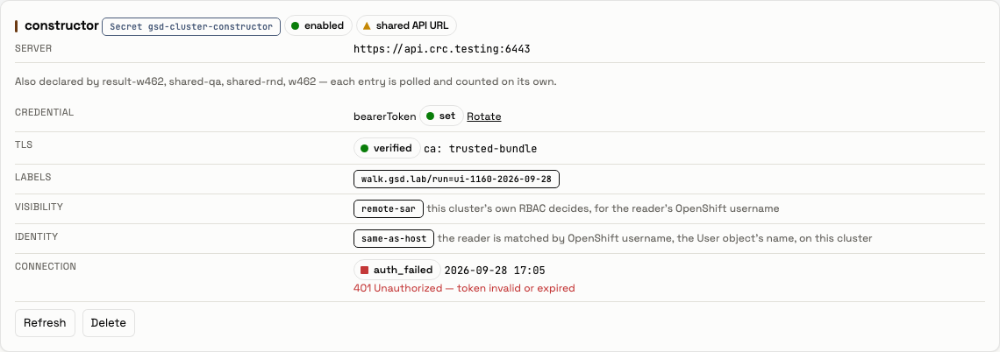
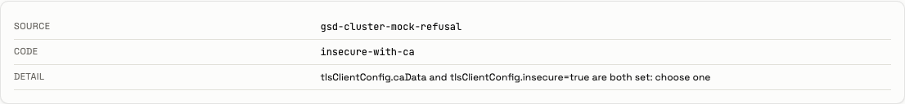
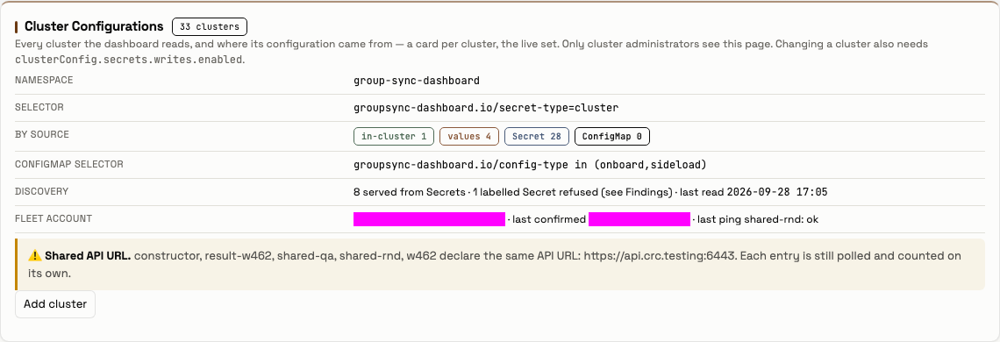
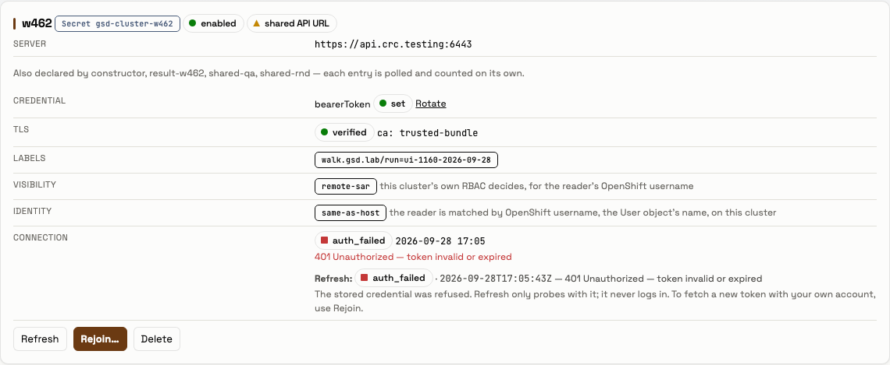
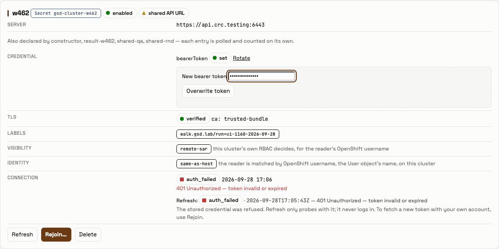
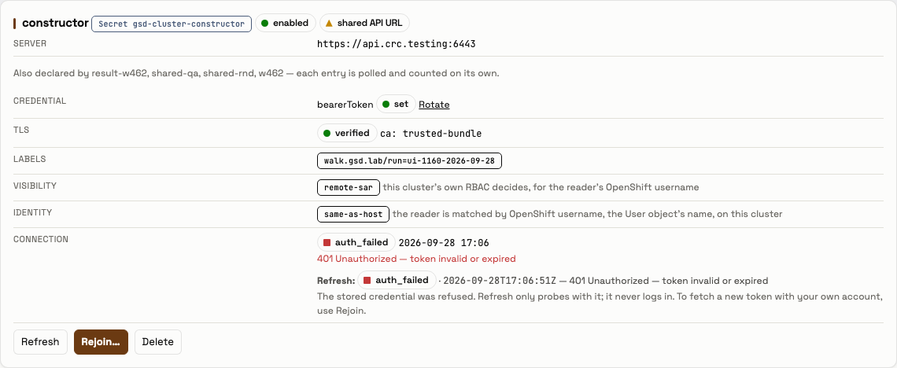
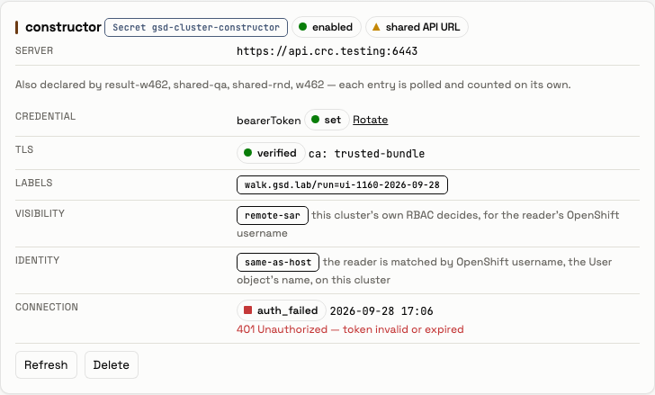
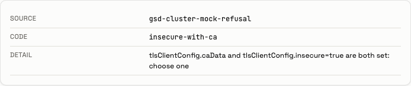
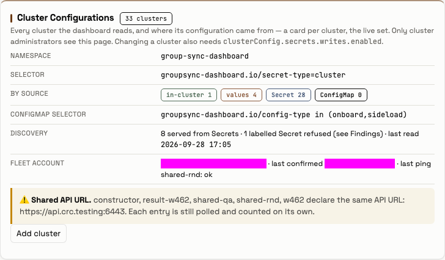
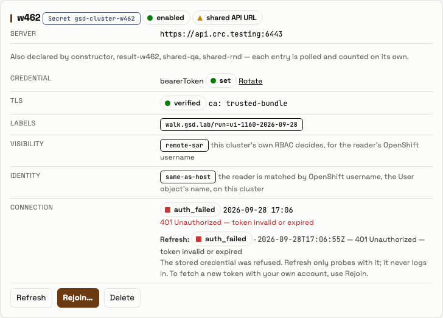
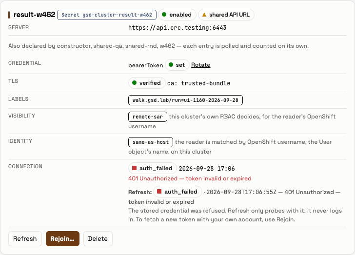

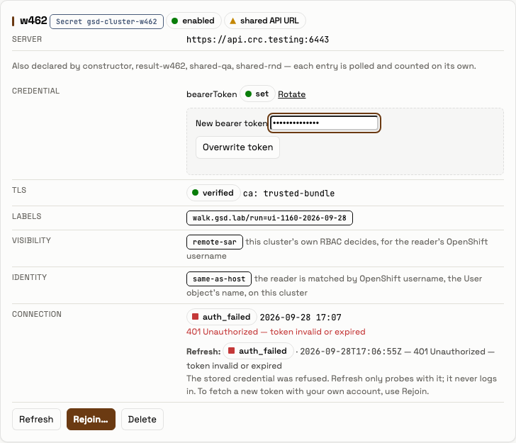
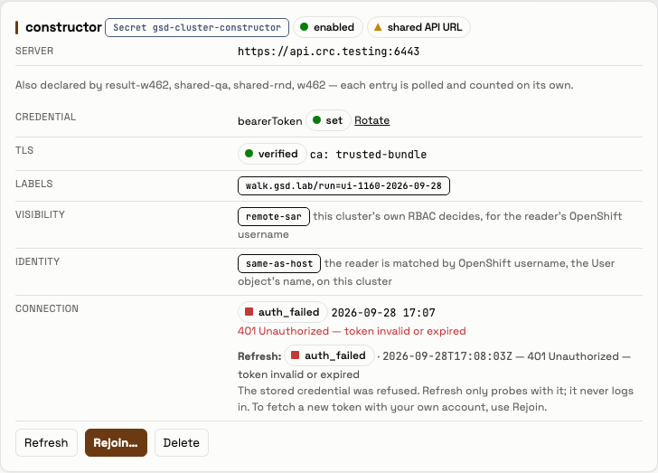
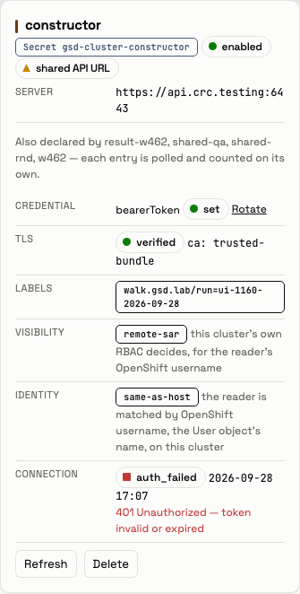
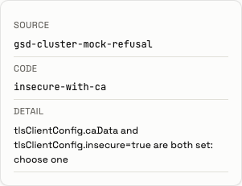
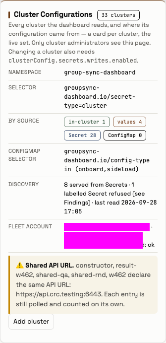
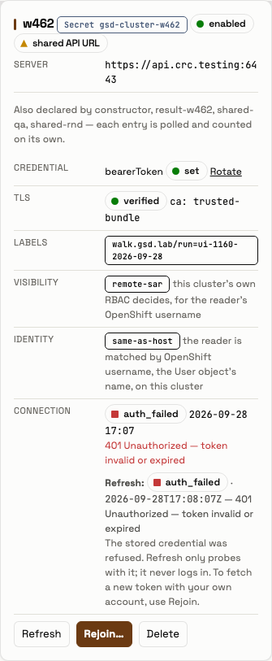
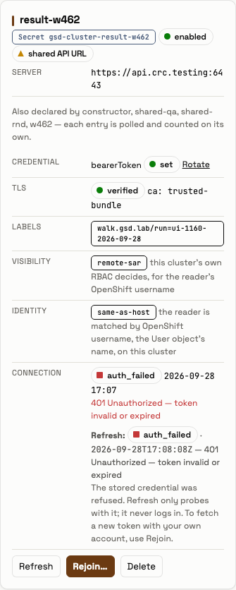
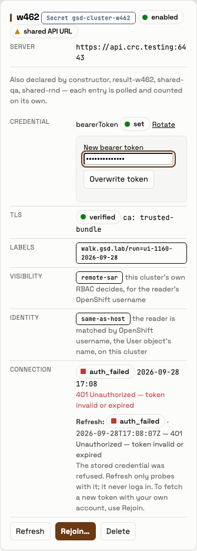
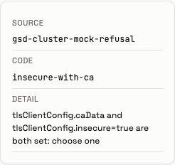